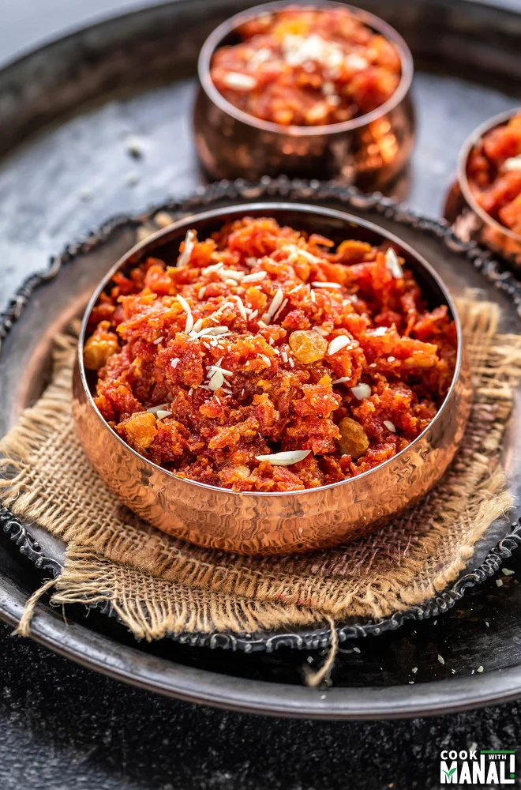

Gajar Ka Halwa

Description
Gajar Halwa, a beloved Indian dessert, is crafted by simmering grated carrots in ghee and whole milk until tender,
then sweetening with sugar and infusing with cardamom
Garnished with nuts, this rich and flavorful treat holds cultural significance and is enjoyed during festivities
for its comforting and timeless appeal.
Ingredients
- Carrots: Freshly grated for the base.
- Ghee: Used for cooking and imparting richness.
- Milk: Whole milk is simmered with carrots for creaminess.
- Sugar: Sweetens the dish to taste.
- Cardamom: Adds aromatic flavor.
- Nuts: Typically almonds and pistachios, chopped for garnish.
- Optional: Raisins for additional sweetness and texture.
Steps
- Grate Carrots: Peel and grate fresh carrots finely.
- Cook in Ghee: In a pan, heat ghee and add the grated carrots. Cook until the carrots soften and release their aroma.
- Simmer in Milk: Pour in whole milk and let the carrot mixture simmer. Stir occasionally until the carrots absorb the milk, and the mixture thickens.
- Sweeten with Sugar: Add sugar to the mixture and continue cooking. Adjust sugar according to taste preferences.
- Infuse with Cardamom: Sprinkle ground cardamom for a fragrant touch. Mix well to incorporate the spice.
- Garnish with Nuts: Stir in chopped almonds and pistachios for a delightful crunch. Reserve some for garnishing at the end.
- Cook Until Thickened: Continue cooking until the halwa reaches a thick, pudding-like consistency.
- Optional: Add Raisins: If desired, add raisins for an extra burst of sweetness and texture.
- Serve Warm: Garnish with the reserved nuts and serve the Gajar Halwa warm. Enjoy this delectable Indian dessert as a perfect conclusion to your meal.